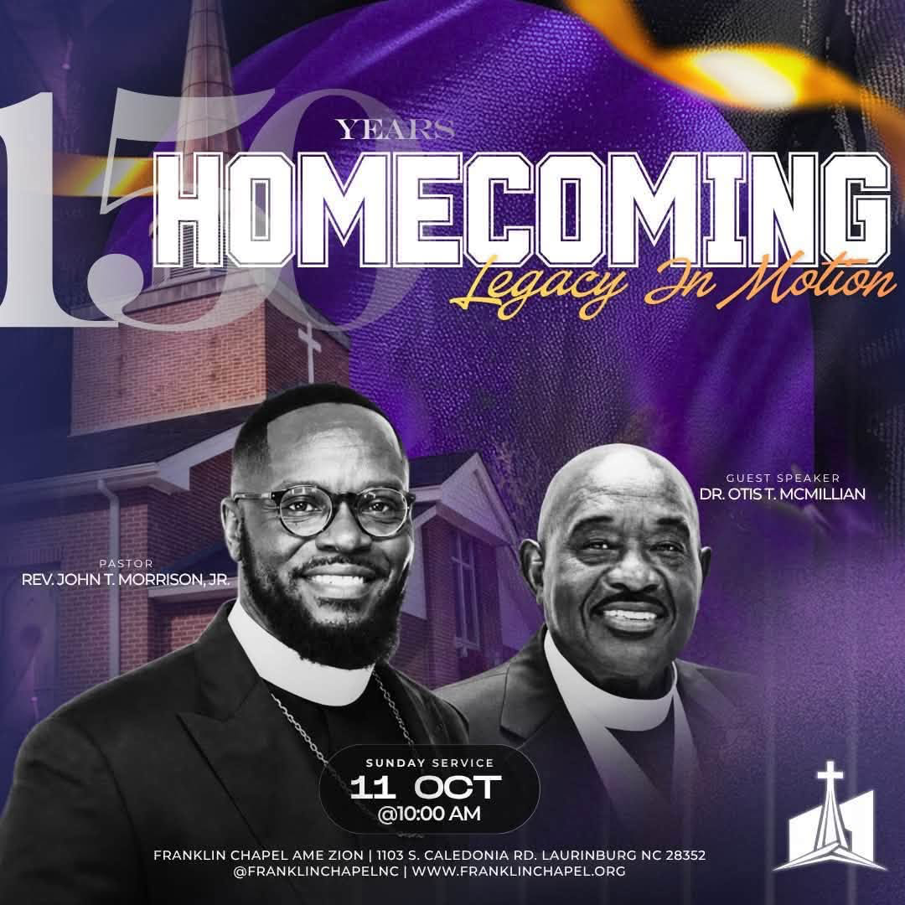

150
Franklin Chapel AME Zion
150 YearsHOMECOMINGLegacy In Motion
Honoring the faith that brought us here and celebrating the legacy still moving through generations.

Honoring the faith that brought us here and celebrating the legacy still moving through generations.
